|
|
| hard corals text index | photo index |
| Phylum Cnidaria > Class Anthozoa > Subclass Zoantharia/Hexacorallia > Order Scleractinia > Family Acroporidae |
| Pebble
coral Astreopora sp.* Family Acroporidae updated Sep 2025 Where seen? This hard coral with a pebbly surface is sometimes seen on some of our Southern shores. Features: Colonies large (about 20cm or more). Colonies are solid (massive) and may be dome-shaped or encrusting, with a few species forming tiers of thick plates. Corallites small, circular opening (1cm or less), usually in a blunt conical shape. The many conical shapes result in a pebbled appearance. The corallites and the surface between corallites usually covered with tiny bumps. New corallites emerge in between existing corallites. The polyps look like tiny sea anemones with 24 tentacles that are flat and petal-like, and a thick body column. Extended polyps usually only seen at night. Colours seen include brown, blue, green sometimes with tinges of other colours. Sometimes mistaken for Turbinaria or Echinopora species. Status: While two species are listed as Near Threatened, there is inadequate information as at 2024 to make an informed assesment of the conservation status of the recorded Pebble corals in Singapore. |
|
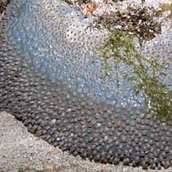 Terumbu Pempang Tengah, May 11 |
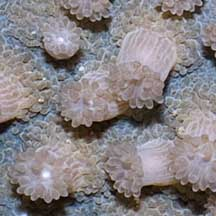 Polyps with 24 flat, petal-like tentacles. |
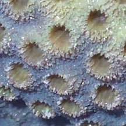 |
|
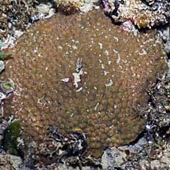 Pulau Hantu, Jun 08 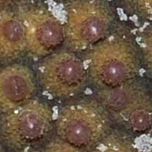 |
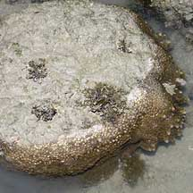 Pulau Hantu, Apr 06 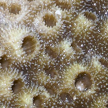 |
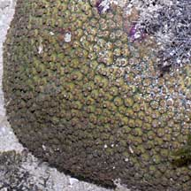 Terumbu Pempang Tengah, May 11 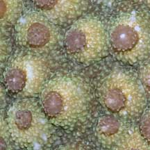 |
*Species are difficult to positively identify without close examination.
On this website, they are grouped by external features for convenience of display.
| Pebble corals on Singapore shores |
On wildsingapore
flickr
|
| Other sightings on Singapore shores |
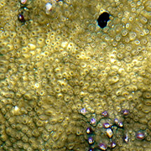 Sentosa Serapong, May 24 Photo shared by Loh Kok Sheng on facebook. |
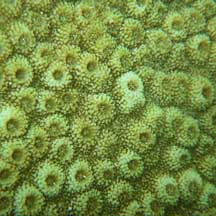 Terumbu Semakau, Jun 10 Photo shared by Loh Kok Sheng on his flickr. |
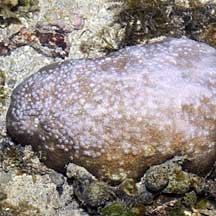 Pulau Berkas, May 10 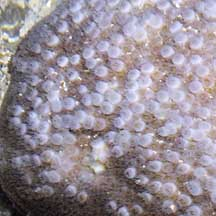 |
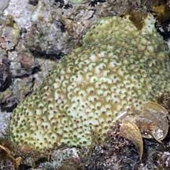 Pulau Berkas, May 10 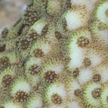 |
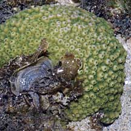 Pulau Berkas, May 10 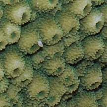 |
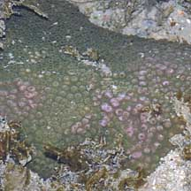 Pulau Biola, May 10 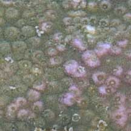 |
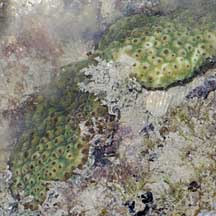 Pulau Pawai, Dec 09 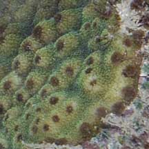 |
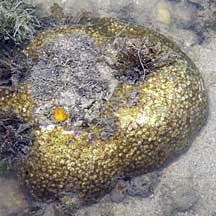 Terumbu Salu, Jan 10 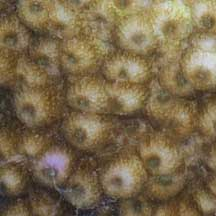 |
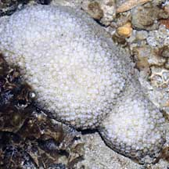 Pulau Salu, Jun 10 Bleaching. |
| Astreopora
species recorded for Singapore from Checklist of Cnidaria (non-Sclerectinia) Species with their Category of Threat Status for Singapore by Yap Wei Liang Nicholas, Oh Ren Min, Iffah Iesa in G.W.H. Davidson, J.W.M. Gan, D. Huang, W.S. Hwang, S.K.Y. Lum, D.C.J. Yeo, May 2024. The Singapore Red Data Book: Threatened plants and animals of Singapore. 3rd edition. National Parks Board. 663 pp. in red are those listed as threatened in the above.
|
|
Links
References
|